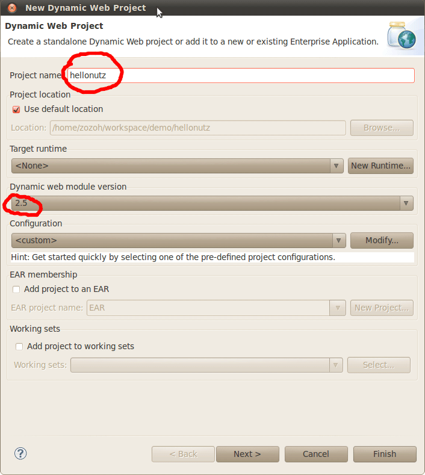
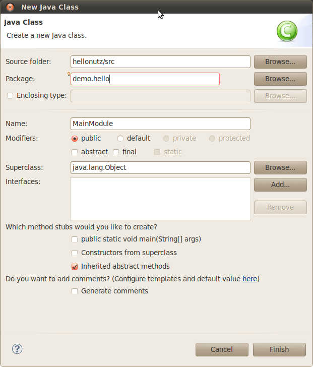

关于这个 Hello World
这是一个简单的小例子，通过简单的几步，即可在 Eclipse 中搭建出一个 Nutz.Mvc的运行环境，我假设你已经：
- 有了 Eclipse J2EE 套件 -- Eclipse 3.5 以上版本
- 安装了 Tomcat 6.0 及以上版本
- 下载了 Nutz 的最新版本 （最好是 1.a.31 或更新版本）
- 截止到本文写作之时， 1.a.31 还未发布，不过你可以自己编译一个最新版本
详细步骤
创建一个 Dynamic Web Project
创建一个新的 Dynamic Web Project （File > New > Project ... > Web > Dynamic Web Project）
- 项目的名称为 hellonutz
- 这个例子使用的是 Tomcat 6.0，所以请将 Dynamic Web module version 设置成 2.5
- 如果你的 Tomcat 是 7.0， 则可以设置成 3.0

创建一个 Tomcat 运行服务器
如果你已经在 Eclipse 中创建了一个 Tomcat 服务器，请跳过本步骤，直接将项目 hellonutz 添加到这个服务器中即可
在 Eclipse 的 Servers 视图中点击右键，选择 New>Server

我们使用的 Tomcat 6.0，当然你可以根据自己的需要选用你的 Tomcat 版本，现在 7.0 已经出来了 ^_^

将项目加入运行服务器

点击 'Finish' 按钮，在 Servers 视图应该出现一个 Tomcat 服务器，这个服务器下应该有一个项目 -- hellonutz
将 Nutz.jar 加入 lib 目录中
本例子需要 Nutz-1.a.31 或者更高的版本，不过你可以自己编译一个最新版本
在 WebContent > WEB-INF > lib 文件夹下右键选择 New > File

点击 'Finish' Eclipse 会将 nutz 的 jar 链到项目中
创建主模块
在 src 目录上右键选择 New > Class

直接点 'Finsih'， 后面我们会修改它的代码
修改 web.xml
通过声明一个 Filter，将 Nutz.mvc 挂载到 Tomcat 中
<?xml version="1.0" encoding="UTF-8"?> <web-app xmlns:xsi="http://www.w3.org/2001/XMLSchema-instance" xmlns="http://java.sun.com/xml/ns/javaee" xsi:schemaLocation="http://java.sun.com/xml/ns/javaee http://java.sun.com/xml/ns/javaee/web-app_2_5.xsd" version="2.5"> <display-name>hellonutz</display-name> <filter> <filter-name>nutz</filter-name> <filter-class>org.nutz.mvc.NutFilter</filter-class> <init-param> <param-name>modules</param-name> <param-value>demo.hello.MainModule</param-value> </init-param> </filter> <filter-mapping> <filter-name>nutz</filter-name> <url-pattern>/*</url-pattern> </filter-mapping> </web-app>
创建入口函数
打开刚才创建的 MainModule.java，添加一个函数，整个类的源代码如下：
package demo.hello;
import org.nutz.mvc.annotation.*;
public class MainModule {
@At("/hello")
@Ok("jsp:jsp.hello")
public String doHello() {
return "Hello Nutz";
}
}
如果你想知道更多配置方式，请参看
创建 jsp 页面
因为我们在入口函数里声明了一个 JSP 视图，按照视图的定义
- @Ok("jsp:jsp.hello")
我们需要在 WEB-INF 下面建立一个名为 jsp 的文件夹，并在里面建立一个 hello.jsp

下面是 hello.jsp 的源代码：
<html>
<head>
<title>I am hello ^_^</title>
</head>
<body>
<h1><%=request.getAttribute("obj")%></h1>
</body>
</html>
仅仅是输出入口函数的返回值。是的，无论入口函数返回什么，都会保存在 request 对象 "obj" 属性中
启动服务

控制台输出

如果你想打印更详细的日志，请参看 让_Nutz_输出日志
在浏览器中访问

这篇文章虽然不算短，但是实际上，你需要作的事情不多，不是吗？ ^_^